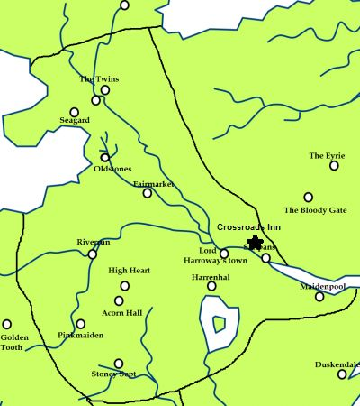

Crossroads Inn
The Crossroads Inn, sometimes called the Old Inn or the Inn at the Crossroads and formerly the Two Crowns, the Bellringer Inn and the Clanking Dragon, is an inn that lies at the crossroads between the Kingsroad running north-south and the east-west road in the Riverlands. The inn sits to the north of the Trident. It lies in the lands that used to belong to House Darry. It is three stories tall with turrets and chimneys made of white stone. Its south wing is built upon pilings that rise over a bed of weeds. On the north side there is a stable with a thatch roof and a bell tower. The building is surrounded by a low wall of broken white stones. It is run by Masha Heddle.
Map on Next page.
